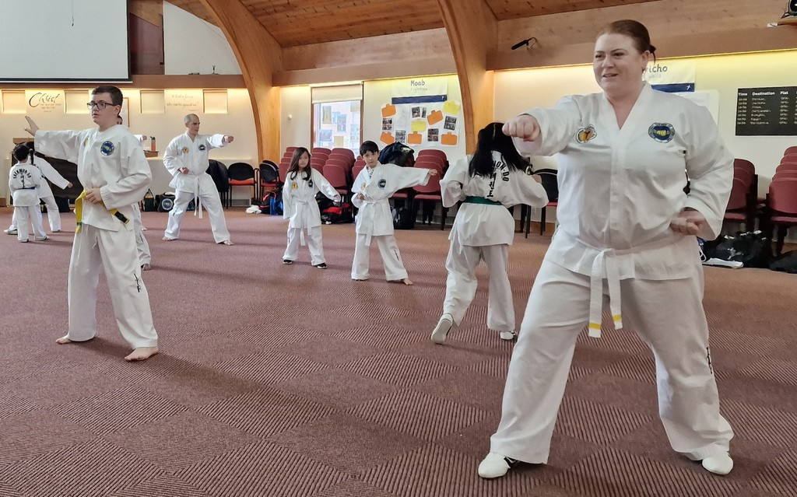
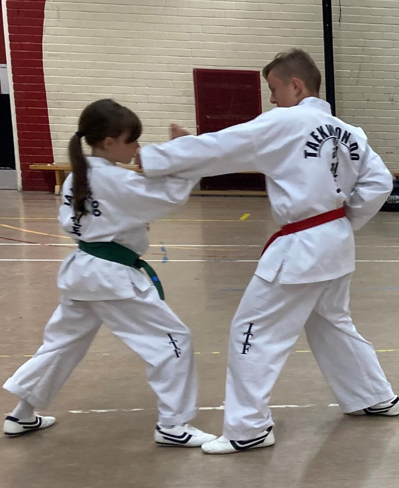

Classes & Locations
Seven clubs, one association.
Independent Taekwondo Schools runs classes right across Aberdeenshire, plus a linked club in the Borders. Three clubs run a full weekly schedule below — the rest are affiliated clubs with their own listings, linked here so nothing gets left out.

Weekly schedule
Aberdeen & Bridge of Don
Seaton Primary School
- Monday7pm – 8pm
Regular weekly class, all grades welcome.
Oldmachar Academy
- Wednesday7pm – 8pm, mixed class
Mixed-grade class for children and adults.
Braehead Primary School
- Friday7pm – 8pm, mixed class
Mixed-grade class for children and adults.
Saturday mornings
- SaturdayGradings, seminars & instructor training
Black Belt and Instructors' Training, plus scheduled gradings and seminars — check with the club for dates.
What to expect
Structured, supervised sparring for every grade.
Classes are mixed-grade and mixed-age, run by PVG-checked, First Aid qualified instructors under Senior Master Murdoch, 8th Dan. New students are welcome to turn up and try a free taster class before committing to a uniform.

Weekly schedule
Peterhead
Peterhead Community Centre
- Tuesday7pm – 8pm, mixed class
- Thursday7pm – 8pm, mixed class
Mixed-grade class for children and adults.
Affiliated & linked clubs
Aberdeen University, Inverurie & Borders
These clubs are part of the same Independent Taekwondo Schools family, but keep their own listings and current schedule — follow the link for each, or contact the association directly and we'll point you the right way.
Aberdeen Central
Listed as one of the association's core Aberdeen venues — contact the club by email or phone for the current day and time.
Aberdeen University
Run through Aberdeen University's own sports programme. Check ausa.org.uk/sports for current session details.
Inverurie
Listed among the association's Aberdeenshire venues — contact the club by email or phone for the current day and time.
Borders
Taekwon-do Borders is the linked Borders club. Find current class details on their Facebook page.
Not sure which club is nearest?
Email or call the association and we'll point you to the right class and book your free taster.